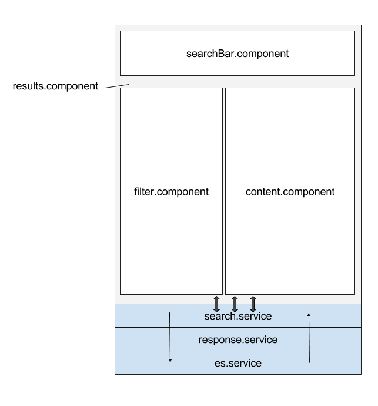

Components¶
results.component¶
Parent Component für Filter, Content und SearchBar Component. Verbindet Components und alle drei Templates.
filter.component¶
Filter werden über das Template visualisiert:
- Type
- Analysis Unit
- Study
- Period
updateFilters(key, val)
Beim Aktivieren / Deaktivieren eines Filters wird das Filter-Objekt aktualisiert. Neue Suchanfrage wird gesendet.
content.component¶
Jedes Ergebnis der Suchanfrage wird gelistet. Anzeigetext unterscheidet zwischen den Typen variables, publications und questions.
searchBar.component¶
Template bildet Suchleiste ab.
search()
Such-Term wird im Anfrage-Objekt in search.service aktualisiert. Suchanfrage wird ausgelöst und Filter zurückgesetzt.
es.service¶
Elasticsearch Service sendet Anfrage an die Datenbank und gibt Antwort unbearbeitet an Response Service weiter.
setQueryTerm()
Setz den übergebenen Such-Term im Query-Objekt.
setFilter()
Fügt dem Query-Objekt entsprechend dem übergebenen Filter-Objekt Filter-Optionen hinzu.
setOffset()
Setzt Offset der Query (gibt Ergebnisse ab dem spezifizierten Index zurück).
connectToServer()
Stellt Verbindung zur Datenbank her. Sendet das vorher definierte Query-Objekt. Gibt Anwort als Promise zurück.
response.service¶
Das Response-Objekt im Elasticsearch-Format wird vereinfacht und umstrukturiert um den weiteren Zugriff zu erleichtern. Rückgabewert ist Promise.